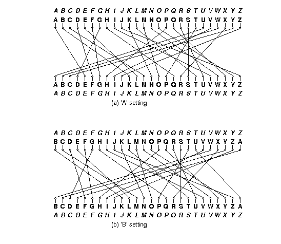
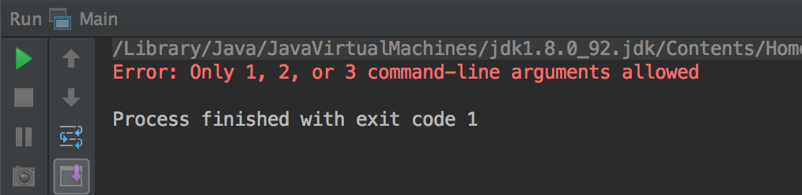
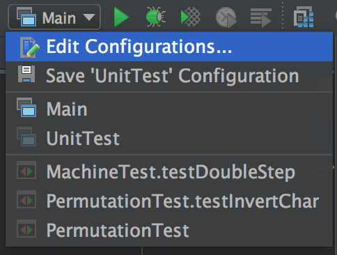
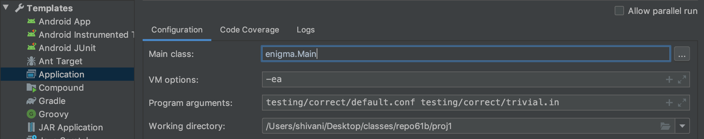
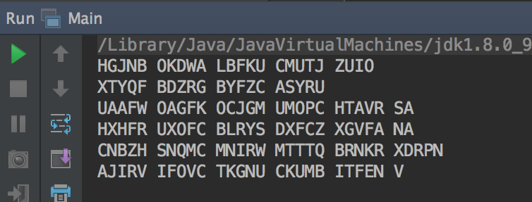

Introduction
This programming assignment is intended to exercise a few useful data structures and an object-based view of a programming problem. There is some background reading, but the necessary program is not (or rather need not be) terribly big. The video walkthrough is located here.
We will be grading largely on whether you manage to get your
program to work (according to our tests). In addition, we will
be looking at your own tests (which you should be sure to turn in as well).
While we have supplied a few unit tests and some simple integration tests and
testing utilities, the tests in the skeleton are entirely inadequate for testing
your program. There is also a stylistic component: the
grading machinery require that your program pass a mechanized style
check (style61b), which mainly checks for formatting and the
presence of comments in the proper places. See the course website
for a brief description of the style rules. You may change any of the code we've
provided, as long as the
resulting program works according to the specifications here.
To obtain the skeleton files (and set up an initial entry for your project in the repository), you can use the command sequence
git fetch shared
git merge shared/proj1 -m "Get proj1 skeleton"from your Git working directory. Should we update the skeleton, you can use exactly the same sequence to update your project with the same changes.
Background
You may have heard of the Enigma machines that Germany used during World War II to encrypt its military communications. If you have not, I recommend you read the wikipedia page on them, or similar resource, especially the part about design and operation. This project involves building a simulator for a generalized version of this machine (which itself had several different versions.) Your program will take descriptions of possible initial configurations of the machine and messages to encode or decode (the Enigma algorithms were reciprocal, meaning that encryption is its own inverse operation.)
The Enigmas effect a substitution cipher on the letters of a message. That is, at any given time, the machine performs a permutation—a one-to-one mapping—of the alphabet onto itself. The alphabet consists solely of the 26 letters in one case (there were various conventions for spaces and punctuation).
Plain substitution ciphers are easy to break (you've probably seen puzzles in newspapers that consist of breaking such ciphers). The Enigma, however, implements a progressive substitution, different for each subsequent letter of the message. This made decryption considerably more difficult.
The device consists of a simple mechanical system of (partially) interchangeable rotors (Walzen) that sit side-by-side on a shaft and make electrical contact with each other. Most of these rotors have 26 contacts on both sides, which are wired together internally so as to effect a permutation of signals coming in from one side onto the contacts on the other (and the inverse permutation when going in the reverse direction). To the left of the rotors, one could select one of a set of reflectors (Umkehrwalzen), with contacts on their right sides only, and wired to connect half of those contacts to the other half. A signal starting from the rightmost rotor enters through one of the 26 possible contacts, flows through wires in the rotors, "bounces" off the reflector, and then comes back through the same rotors (in reverse) by a different route, always ending up being permuted to a letter position different from where it started; that is, the permutation was always a derangement. (This was a significant cryptographic weakness, as it turned out. It doesn't really do a would-be code-breaker any good to know that some letters in an encrypted message might be the same as the those in the plaintext if he doesn't know which ones. But it does a great deal of good to be able to eliminate possible decryptions because some of their letters are the same as in the plaintext.)
Each rotor and each reflector implements a different permutation, and the overall effect depends on their configuration: which rotors and reflector are used, what order they are placed in the machine, and which rotational position they are initially set to. This configuration is the first part of the secret key used to encrypt or decrypt a message. In what follows, we'll refer to the selected reflector and rotors in a machine's configuration as 1 through N, with 1 being the reflector, and N the rightmost rotor. In our simulator, N will be a configuration parameter. In actual Enigma machines, it was fixed for any given model (the Kreigsmarine (Navy) used $N=5$ (four rotors and reflector) and the Wehrmacht used $N=4$.)
The overall permutation changes with each successive letter because some of the rotors rotate after encrypting a letter. Each rotor has a circular ratchet on its right side and an "alphabet ring" on its left side that fits over the ratchet of the rotor to its left. Before a letter of a message is translated, a spring-loaded pawl (lever)—one to the right of each rotating rotor—tries to engage the ratchet on the right side of its rotor and thus rotate its rotor by one position, changing the permutation performed by the rotor. Thus, pawls always try to engage with the ratchet of their own rotor. The lever on the rightmost rotor (N) always succeeds, so that rotor N (the "fast" rotor) rotates one position before each character. The pawls pushing the other rotors, however, are normally blocked from engaging their rotors by the alphabet ring on the left side of the rotor to their right. This interactive website provides a good visualization of how signals travel through the rotors and how messages are encrypted. DISCLAIMER: This visualizer does not depict the underlying details of how rotors rotate. It's just a tool that may help your understanding of how the electrical signals propagate through the system.
This ring usually holds the pawl away from its own ratchet, preventing the rotor wheel to its left from moving. However, the rings have notches in them (either one or two in the original Enigma machines), and when the pawl is positioned over a notch in the ring for the rotor to its right, it slips through to its own rotor and pushes it forward. A "feature" of the design called "double stepping" (corrected in other versions of the Enigma, since it reduced the period of the cipher) is that when a pawl is in a notch, it also moves the notch itself and the rotor the notch is connected to. Since the notch for rotor $i$ is connected to rotor $i$, when the pawl of rotor $i - 1$ slips through into the notch for rotor $i$, rotors on both sides of the pawl move (so rotor $i-1$ and rotor $i$ move).
Let's illustrate with a much simplified version. Suppose our alphabet has only the letters A-C and we have four rotors (numbered 1-4) each of which has one notch on its ring at the C position. Suppose also that there are 3 pawls, one for each of rotors 2-4. We will still refer to these as pawls 2-4, to maintain that pawl $i$ belongs to rotor $i$. There is no pawl for rotor 1, which will therefore not rotate. We'll start with the rotors set at AAAA. The next 19 positions are as follows:
AAAB AAAC AABA AABB AABC AACA ABAB ABAC
ABBA ABBB ABBC ABCA ACAB ACAC ACBA ACBB
ACBC ACCA AAABAs you can see,
- Rotor 4, the fast rotor, advances each time, pushed by pawl 4. Rotor 4 has no rotor to its right, so there isn't a ring blocking it from engaging with its ratchet.
- Rotor 3 advances whenever Rotor 4 is at C. Rotor 4 has a notch at C, so pawl 3 can engage with the corresponding ratchet (the ratchet belonging to Rotor 3) and advance Rotor 3 by pushing on its ratchet. This would also rotate Rotor 4, since pawl 3 contacts its ratchet through the notch of Rotor 4, and therefore pushes the side of the notch when it moves. However, since Rotor 4 always rotates anyway (because pawl 4 is always unblocked), this doesn't really change anything.
- Rotor 2 advances whenever Rotor 3 is at C, pushed by pawl 2. Rotor 3 has a notch at C, so pawl 2 slips into the notch and engages with its ratchet (the ratchet belonging to Rotor 2). Rotor 3 also advances when it is at C, because when pawl 2 is engaged through Rotor 3's notch it will push against that notch when it moves, moving Rotor 3, as well as moving Rotor 2 by pushing on Rotor 2's ratchet.
- There is no pawl 1, so Rotor 2 (unlike Rotor 3) does not advance just because it is at C.
- Rotor 1 never changes, since there is no pawl on either side of it.
Each rotor can only advance at most one position per keypress.
So the advancement of the rotors, while similar to that of the wheels of an odometer, is not quite the same. If it were, then the next position after AACA would be AACB, rather than ABAB. Also, it would take 27 steps to return to the initial configuration instead of 18.
The effect of advancing a wheel is to change where on the wheel any given signal enters or leaves. When a wheel is in its 'A' setting in the machine, then a signal that arrives from the right at, say, the 'C' position, goes into the 'C' contact on the wheel. Likewise, a signal that leaves the wheel from its left 'C' contact exits at the 'C' position. When the wheel is rotated by one to its 'B' setting, a signal that arrives at the 'C' position goes instead into the 'D' contact on the wheel, and a signal that leaves through the 'D' contact does so at the 'C' position. It's easier to calculate if we use numbers 0--25 rather than letters ('A' is 0, 'B' is 1, etc.). Then, when the wheel is in its $k$ setting, a signal entering at the $p$ position enters the $p+k \bmod 26$ contact on the wheel, and a signal exiting through the $c$ contact does so at the $c - k \bmod 26$ position. For example, Figure 1 shows one of the rotors from the real Enigma machines (called rotor "I") and the effect of moving from its 'A' to its 'B' setting.

Figure 1. Permutations performed by a rotor in its 'A' and 'B' settings. The italicized alphabets at the top and bottom indicate the letters corresponding to the positions around the rotor. The inner alphabets indicate the positions along the rotor itself. The rotor depicted was designated 'I' in the original Enigma machine used by the German military.
The contacts on the rightmost rotor's right side connect with stationary input and output contacts, which run to keys that, when pressed, direct current to the contact from a battery or, when not pressed, direct current back from the contact to a light bulb indicating a letter of the alphabet. Since a letter never encrypts or decrypts to itself after going back and forth through the rotors, the to and from directions never conflict.
The German Navy used a machine with 12 rotors and five slots for them:
- Eight rotors labeled with roman numerals I--VIII, of which three will be used in any given configuration as the rightmost rotors,
- Two additional non-moving rotors (Zusatzwalzen) labeled "Beta" and "Gamma", of which one will be used in any configuration, as the fourth-from-right rotor, and
- Two reflectors (Umkehrwalzen), labeled 'B' and 'C', of which one will be used in any given configuration as the leftmost rotor.
Given just this equipment, there are 614,175,744 possible configurations (or keys):
- Two possible reflectors, times
- Two possible rotors in the fourth position, times
- $8!/(8-3)! = 336$ choices for the rightmost three rotors and their ordering, times
- $26^4$ possible initial rotational settings for the rightmost four rotors (each reflector had only one possible position.).
Especially by today's standards, this is not a large key size (less than 30 bits). To make things more difficult for code-breakers, therefore, the Enigma incorporated a plugboard (Steckerbrett) between the keyboard and the rightmost wheel. It acted as a non-moving, configurable rotor. The operator could choose any set of disjoint pairs of letters by means of cables placed between them on the plugboard. Each selected pair would then be swapped going into the machine from the keyboard and coming out into the indicator lights. Thus, if the operator connected ("steckered") the letters A and P, then P would be substituted for each A typed and vice versa. Likewise, if an ingoing letter was encrypted to P by the other rotors, it would display as A, and letters decrypted as A would display as P.
Describing Permutations
Since the rotors and the plugboard implement permutations, we'll need a standard way to describe them. We could simply have a table showing each letter and what it maps to, but we'll use a more compact notation known as cycle representation. The idea is that any permutation of a set may be described as a set of cyclic permutations. For example, the notation
(AELTPHQXRU) (BKNW) (CMOY) (DFG) (IV) (JZ) (S)describes the permutation in Figure 1. It describes seven cycles:
- A maps to E, E to L, L to T, ..., R to U, and U back to A.
- B maps to K, K to N, N to W, and W back to B.
- C maps to M, M to O, O to Y, and Y back to C.
- D maps to F, F to G, and G back to D.
- I maps to V and V back to I.
- J maps to Z and Z back to J.
- S maps to itself.
The inverse permutation just reverses these cycles:
- U maps to R, R to X, ..., E to A, and A back to U.
- ...
- S maps to itself.
Each letter appears in one and only one cycle, so the mapping is unambiguous. As a shorthand, we'll say that if a letter is left out of all cycles, it maps to itself (so that we could have left off "(S)" In the example above.)
Figure 2 shows the permutations corresponding to the rotors used in the German Navy's Enigma machine.
| Rotor | Permutation (as cycles) | Notch |
|---|---|---|
| Rotor I | (AELTPHQXRU) (BKNW) (CMOY) (DFG) (IV) (JZ) (S) | Q |
| Rotor II | (FIXVYOMW) (CDKLHUP) (ESZ) (BJ) (GR) (NT) (A) (Q) | E |
| Rotor III | (ABDHPEJT) (CFLVMZOYQIRWUKXSG) (N) | V |
| Rotor IV | (AEPLIYWCOXMRFZBSTGJQNH) (DV) (KU) | J |
| Rotor V | (AVOLDRWFIUQ)(BZKSMNHYC) (EGTJPX) | Z |
| Rotor VI | (AJQDVLEOZWIYTS) (CGMNHFUX) (BPRK) | Z and M |
| Rotor VII | (ANOUPFRIMBZTLWKSVEGCJYDHXQ) | Z and M |
| Rotor VIII | (AFLSETWUNDHOZVICQ) (BKJ) (GXY) (MPR) | Z and M |
| Rotor Beta | (ALBEVFCYODJWUGNMQTZSKPR) (HIX) | |
| Rotor Gamma | (AFNIRLBSQWVXGUZDKMTPCOYJHE) | |
| Reflector B | (AE) (BN) (CK) (DQ) (FU) (GY) (HW) (IJ) (LO) (MP) (RX) (SZ) (TV) | |
| Reflector C | (AR) (BD) (CO) (EJ) (FN) (GT) (HK) (IV) (LM) (PW) (QZ) (SX) (UY) |
Figure 2. The rotors used in the Naval Enigma, showing the permutations they implement and the point(s) at which there are notches that allow their left neighbor rotor to advance. Thus, when Rotor I is at 'Q' and the machine advances, the rotor to the left of Rotor I will advance. The Beta and Gamma rotors and the reflectors do not rotate. The reflectors shown here are the "thin" versions of the reflectors used in the naval M4 Enigma machine. The B reflector together with the Beta rotor in the 'A' position had the same effect as the usual ("thick") B reflector in the older three-rotor M3 Enigma machine (likewise the C reflector with the Gamma rotor). This allowed the M4 to encrypt and decrypt messages to and from M3 Enigmas. Source: Tony Sale's pages.
Example
As an example of a translation, consider the set of rotors from Figure 2, and suppose that
- The rotors in positions 1--5 are, respectively, B, Beta, III, IV, and I.
- The rotors in positions 2--5 are currently at positions A, X, L, E, respectively.
- In the plugboard, the letter pair 'Y' and 'F' and the letter pair 'Z' and 'H' are both interchanged.
We input the letter 'Y', which causes the following steps:
- The pawls all move. This causes rotor 5 to advance from E to F. The other two pawls are not over notches, so rotors 3 and 4 do not move.
- The letter 'Y' enters the plugboard and is converted to 'F'.
- The letter 'F' enters the right side of rotor 5 (an I rotor) at position 5, since 'F' is the 5th letter of the alphabet numbering from 0. Since the current setting of rotor 5 is 'F', the signal enters the rotor at position $5$, but hits contact $5+5=10$, or 'K'.
- According to Figure 2, rotor I converts 'K' to 'N' (letter number 13). Because the setting of rotor I is 'F', however, the signal actually comes out at letter position $13-5=8$ ('I').
- The 'I' signal from rotor 5 now goes into the right side of rotor 4. Since rotor 4 is a IV rotor and is in the 'L' (or 11) setting, the 'I' enters at contact $8+11=19$ ('T'), and is translated to 'G' (6), which comes out at position $6-11=-5 = 21 \bmod 26$, the fifth letter from the end of the alphabet ('V').
- The 'V' from rotor 4 goes now to the right side of rotor 3, a III rotor in setting 'X' (23). The signal enters the rotor at contact $21+23 = 44 = 18 \bmod 26$ ('S'), is translated to 'G' (6), which exits at position $6 - 23 = -17 = 9 \bmod 26$ ('J').
- Rotor 2 (Beta) is in position 'A', and thus translates 'J' to 'W'.
- Rotor 1 (B) converts the 'W' to 'H' and bounces it back to the left side of rotor 2.
- Rotor 2 (Beta in the 'A' position) converts 'H' on its left to 'X' (23) on its right.
- The 'X' from rotor 2 now goes into the $23 + 23 = 46 = 20 \bmod 26$ ('U') contact on the left side of rotor 3 (III in setting 'X'), and is converted to 'W' (22), which comes out at position $22-23=-1=25 \bmod 26$ ('Z') on the right side of rotor 3.
- 'Z' now enters the left side of rotor 4 (IV in setting 'L') at $25+11=36=10 \bmod 26$ ('K'), and is translated to 'U' (20), which comes out at position $20 - 11=9$ ('J') on the right side of rotor 4.
- The 'J' from rotor 4 enters the left side of rotor 5 (I at setting 'F') at contact $9 + 5= 14$ ('O'), is translated to 'M' (12), and comes out at position $12 - 5 = 7$ ('H') on the right side of rotor 5.
- Finally,the letter 'H' is converted to 'Z' by the plugboard.
Therefore, 'Y' is converted to 'Z'.
After a total of 12 characters are converted, the rotor settings will have become 'AXLQ'. Just before the next character is converted, rotor 5 will advance to 'R' and, since its notch is at position 'Q', rotor 4 will advance to 'M', so that the rotor configuration will be 'AXMR' before the 13th character is converted. After an additional 597 characters have been converted, the configuration will be 'AXIQ'. The character after that will advance rotor 5 to 'R' and rotor 4 to 'J', giving 'AXJR'. The next character will advance 5 to 'S', and, since rotor IV's notch is at 'J', rotor 3 will advance to 'Y'. Also, as rotor 3's pawl advances rotor 3, it also moves the notch on rotor 4, advancing rotor 4 to 'K', so that the configuration goes from 'AXJR' to 'AYKS'. Rotor 3 in this case has a notch at 'V', but since rotor 2 has no pawl, rotor 3's notch never has any effect.
Input and Output
To run your program on the command line, first compile all of your files with
javac -g -Xlint:unchecked enigma/*.javaor, if you have it, just use
makeAfter compiling, you can use the command
java -ea enigma.Main [configuration file] [input file] [output file]to run your program. The configuration file contains descriptions of the machine and the available rotors. The data are in free format. That is, they consist of strings of non-whitespace characters separated by arbitrary whitespace (spaces, tabs, and newlines), so that indentation, spacing, and line breaks are irrelevant. Each file has the following contents:
- A string of the form $C_1C_2\cdots C_n$ where the $C_i$ are
non-blank ASCII characters other than "
*", "(" and ")". This is the alphabet of the machine, giving both the character set and the ordering of the characters around a rotor. For the examples in this document, we use just the upper-case alphabet (as did the Enigma machines), but your solution must deal with general alphabets. In the following, we will generally refer to the characters in this alphabet as "letters", even when they include digits, punctuation, or other symbols. - Two integer numerals, $S > P \ge 0$, where $S$ is the number of rotor slots (including the reflector) and $P$ is the number of pawls—that is, the number of rotors that move. The moving rotors and their pawls are all to the right of any non-moving ones.
Any number of rotor descriptors. Each has the following components (separated by whitespace):
- A name containing any non-blank characters other than parentheses.
- One of the characters R, N, or M, indicating that the rotor is a reflector, a non-moving rotor, or a moving rotor, respectively. Non-moving rotors can only be used in positions $2$ through $S-P$ and moving rotors in positions $S-P+1$ through $S$.
- Immediately after the M for a moving rotor come(s) the letter(s) at which there is a notch on the rotor's ring (no space between M and these letters).
- The cycles of the permutation, using the notation discussed above.
For example, the German Naval Enigma machine might be described with this configuration file (see Figure 2):
ABCDEFGHIJKLMNOPQRSTUVWXYZ
5 3
I MQ (AELTPHQXRU) (BKNW) (CMOY) (DFG) (IV) (JZ) (S)
II ME (FIXVYOMW) (CDKLHUP) (ESZ) (BJ) (GR) (NT) (A) (Q)
III MV (ABDHPEJT) (CFLVMZOYQIRWUKXSG) (N)
IV MJ (AEPLIYWCOXMRFZBSTGJQNH) (DV) (KU)
V MZ (AVOLDRWFIUQ)(BZKSMNHYC) (EGTJPX)
VI MZM (AJQDVLEOZWIYTS) (CGMNHFUX) (BPRK)
VII MZM (ANOUPFRIMBZTLWKSVEGCJYDHXQ)
VIII MZM (AFLSETWUNDHOZVICQ) (BKJ) (GXY) (MPR)
Beta N (ALBEVFCYODJWUGNMQTZSKPR) (HIX)
Gamma N (AFNIRLBSQWVXGUZDKMTPCOYJHE)
B R (AE) (BN) (CK) (DQ) (FU) (GY) (HW) (IJ) (LO) (MP)
(RX) (SZ) (TV)
C R (AR) (BD) (CO) (EJ) (FN) (GT) (HK) (IV) (LM) (PW)
(QZ) (SX) (UY)The input file to your program will consist of a sequence of messages to decode, each preceded by a line giving the initial settings. Given the configuration file above, a settings line looks like this:
* B Beta III IV I AXLE (YF) (ZH)The asterisk must appear in the first column. Other items on the line may be separated from each other by tabs and blanks; adjacent items that are rotor names or consist entirely of letters from the alphabet must be so separated. This particular example means that the rotors used are reflector B, and rotors Beta, III, IV, and I, with rotor I in the rightmost, or fast, slot. The remaining parenthesized items indicate that the letter pair Y and F and the pair Z and M are steckered (swapped going in from the keyboard and going out to the lights).
In general for this particular configuration, rotor 1 is always the reflector; rotor 2 is Beta or Gamma, and each of 3-5 is one of rotors I-VIII. A rotor may not be repeated. The four letters of the following word (AXLE in the example) give the initial positions of rotors 2-5, respectively (i.e., not including the reflector). Any number of steckered pairs may follow (including none).
After each settings line comes a message on any number of lines. Each line of a message consists only of letters (here meaning characters from the specified alphabet), spaces, and tabs (0 or more). The program should ignore the blanks and tabs. The end of message is indicated either by the end of the input or by a new configuration line (distinguished by its leading asterisk). The machine is not reset between lines, but continues stepping from where it left off on the previous message line. Because the Enigma is a reciprocal cipher, a given translation may either be a decryption or encryption; you don't have to worry about which, since the process is the same in any case.
Output the translation for each message line in groups of five characters, separated by a space (the last group may have fewer characters, depending on the message length). Figure 3 contains an example that shows an encryption followed by a decryption of the encrypted message. Since we have yet to cover the details of File I/O, you will be provided the File IO machinery for this project.
Input | Output
* B Beta III IV I AXLE (HQ) (EX) (IP) (TR) (BY) | QVPQS OKOIL PUBKJ ZPISF XDW
FROM HIS SHOULDER HIAWATHA | BHCNS CXNUO AATZX SRCFY DGU
TOOK THE CAMERA OF ROSEWOOD | FLPNX GXIXT YJUJR CAUGE UNCFM KUF
MADE OF SLIDING FOLDING ROSEWOOD | WJFGK CIIRG XODJG VCGPQ OH
NEATLY PUT IT ALL TOGETHER | ALWEB UHTZM OXIIV XUEFP RPR
IN ITS CASE IT LAY COMPACTLY | KCGVP FPYKI KITLB URVGT SFU
FOLDED INTO NEARLY NOTHING | SMBNK FRIIM PDOFJ VTTUG RZM
BUT HE OPENED OUT THE HINGES | UVCYL FDZPG IBXRE WXUEB ZQJO
PUSHED AND PULLED THE JOINTS | YMHIP GRRE
AND HINGES | GOHET UXDTW LCMMW AVNVJ VH
TILL IT LOOKED ALL SQUARES | OUFAN TQACK
AND OBLONGS | KTOZZ RDABQ NNVPO IEFQA FS
LIKE A COMPLICATED FIGURE | VVICV UDUER EYNPF FMNBJ VGQ
IN THE SECOND BOOK OF EUCLID |
| FROMH ISSHO ULDER HIAWA THA
* B Beta III IV I AXLE (HQ) (EX) (IP) (TR) (BY) | TOOKT HECAM ERAOF ROSEW OOD
QVPQS OKOIL PUBKJ ZPISF XDW | MADEO FSLID INGFO LDING ROSEW OOD
BHCNS CXNUO AATZX SRCFY DGU | NEATL YPUTI TALLT OGETH ER
FLPNX GXIXT YJUJR CAUGE UNCFM KUF | INITS CASEI TLAYC OMPAC TLY
WJFGK CIIRG XODJG VCGPQ OH | FOLDE DINTO NEARL YNOTH ING
ALWEB UHTZM OXIIV XUEFP RPR | BUTHE OPENE DOUTT HEHIN GES
KCGVP FPYKI KITLB URVGT SFU | PUSHE DANDP ULLED THEJO INTS
SMBNK FRIIM PDOFJ VTTUG RZM | ANDHI NGES
UVCYL FDZPG IBXRE WXUEB ZQJO | TILLI TLOOK EDALL SQUAR ES
YMHIP GRRE | ANDOB LONGS
GOHET UXDTW LCMMW AVNVJ VH | LIKEA COMPL ICATE DFIGU RE
OUFAN TQACK | INTHE SECON DBOOK OFEUC LID
KTOZZ RDABQ NNVPO IEFQA FS |
VVICV UDUER EYNPF FMNBJ VGQ |
Editing Main
Within Main.java, you will be working with Scanners. We
recommend that before you tackle this portion of the project
you do homework 3, as there will substantial practice on that
assignment. Inside of Main.java you will deal with a substantial
amount of input handling (involving both valid and invalid inputs). Do
not assume that all of your inputs will be well-formed and do your
best to make sure that you handle all cases where the input is not
what is expected.
In addition to this, in Main.java, you will need to print output in
a way that matches our sample output file. The Unix convention is that every
line ends with a newline (we say that newline is a line terminator
rather than a line separator), so
make sure that your output file also includes a newline at the end.
If your output seems exactly the
same as the grader's, but you are failing a test, chances are that
there is a newline error.
Handling Errors
You can see a number of opportunities for input errors:
- The configuration file may have the wrong format.
- The input might not start with a setting.
- The setting line can contain the wrong number of arguments.
- The rotors might be misnamed.
- A rotor might be repeated in the setting line.
- The first rotor might not be a reflector.
- The initial positions string might be the wrong length or contain characters not in the alphabet.
- Messages containing characters from outside the alphabet.
A significant amount of a program will typically be devoted to
detecting such errors, and taking corrective action. In our case, the
main program is set up in such a way that the
only corrective action needed is to throw an EnigmaException
with an explanatory message.
The existing code in the main program will catch this exception,
print its message, and exit with a standard Unix error indication.
The skeleton supplies a simple static utility method, error, which
provides a convenient way to create error exceptions. There are examples of its
use in the skeleton.
Testing
The directory testing contains the scripts test-correct and test-error
for testing the execution of enigma.Main.
bash test-correctF1.in F2.in ... will run the program for each of the message files F1.in, F2.in ..., comparing the results to the corresponding output files F1.out, F2.out, .... The configuration files used are F1.conf, F2.conf, .... However, if any of these is missing, the filedefault.conf(from the same directory as the input file) is used instead.bash test-errorF1.in F2.in ... will run the program for each of the message files F1.in, F2.in ..., checking that the program reports at least one error in each case. The configuration files are as fortest-correct.
This needs to be run in your proj1 directory, with paths to test-correct
and input files. For example:
bash testing/test-correct testing/correct/trivial1.inThe tests we've supplied are nowhere near adequate to test your program, so you will need to generate your own integration tests as well as unit tests (we will check to see that you make an effort to test).
Writing Unit Tests & Integration Tests
A (non-conclusive) video guide on how to test is given here.
Note about the video guide: The point in the spec in Vid #3 was: "A rotor might be repeated in the setting line.” Upon checking the AG tests, it turns out this line was meant for the .in file and your solution DOES NOT need to account for repetitions in the .conf file. To be clear, .conf would not be tested for repetitions so it is okay if your code can't handle that.
We recommend you write unit tests for each class you write.
We have provided you the files PermutationTest.java and
MovingRotorTest.java, but if you create new files outside of that,
make sure to link it in UnitTest.java. Lab 6
will provide resources on how to go about writing unit tests and
integration tests for Enigma, and will specifically walk you through
writing tests for Permutation and using staff-enigma to help generate
your own integration tests.
Running Enigma in IntelliJ
As touched upon above, you can run your program on the command line. In this section, we will cover how to run Enigma on IntelliJ with input and output files.
Navigate to the Main class in your project. Try clicking the green
play button next to the main method in Main, and select 'Run
Main.main()'. If you haven't previously inputted arguments, you should
see an error like this:

We got this error because we haven't passed in any arguments to the program! Notice that between 1 and 3 arguments can be passed in:
- ARGS[0] is the name of a configuration file.
- ARGS[1] names an input file containing messages.
- ARGS[2] names an output file for processed messages.
At the top right hand side of your screen, you should see a dropdown menu now labeled Main. You should click the dropdown and select 'Edit Configurations...'

A window should pop up, and you should be able to enter in your
arguments in the Program Arguments bar. For this example, create a
file called riptide.in in your testing/correct/ directory with the
following contents:
* B Beta I II III AAAA (TD) (KC) (JZ)
I WAS SCARED OF CODING IN JAVA
I WAS SCARED OF USING GIT
AND STARTING ALL THESE PROJECTS
COMPILER KEEPS GETTING MAD AT ME
NOW MY PROJECT ONLY RUNS IN MY DREAMS
OH OH ALL THESE MERGE CONFLICTSIf you've copied the file into your directory, you should be able to
refer to your default.conf configuration file and the riptide.in
file. Make sure you specify the correct path to your files, with
respect to your Working Directory.

This is equivalent to specifying the program arguments as such:
java -ea enigma.Main [configuration file] [input file] [output file]Now run Main.main(). We haven't specified an output file, so you
should see the output of your machine in standard output. If you're
wondering, you've just encrypted a verse in the Summer 2017 CS61BL
Musical!
As a reference, you should see output like below. You're welcome to make a new output file and add that to your program arguments if you prefer.

We encourage you to write more of your own input and configuration files and test them as above. We expect that you have added adequate unit tests and additional integration tests beyond those provided in the skeleton.
Comparing with the Staff Solution
You can run tests on the staff solution by ssh-ing into your instructional
account and running staff-enigma <conf file> <input file>.
In order to redirect your output to a certain file you can add >> filename
at the end of each command, for example,
staff-enigma <conf file> <input file> >> file1.out
To compare your files with the staff files, you can run
sdiff file1 file2 or use an online diffchecker.
Extra Credit
If after completing your solution, you are for some reason hankering for more, you can, for 2 points of extra credit, implement the last missing piece of the Enigma: the ring setting (Ringstellung). The alphabet rings are so called because they are marked with the letters of the alphabet. It is these letters that appear in the panel of the machine and indicate the current settings of the rotors. In the real Enigma, the rotors' rings are adjustable. Think of the positions on a rotor as being numbered from 0, with 0 being the usual position of the first letter of the alphabet on the ring. The ring can be turned so as to make any letter of the alphabet correspond to that 0 position instead. If, for example, we have the usual upper-case alphabet and we set the ring of rotor III so that "B" is at the 0 position, then when the setting of that rotor is "B", the rotor will convert "J" to "T", just as that rotor would normally translate "J" when in the "A" position. Likewise, when at the "D" setting, it would translate as it normally would in the "C" setting.
Besides affecting the meaning of the rotor settings, the alphabet ring also carries the notches that allow adjacent rotors to move. The III rotor, for example, has a notch at its "V" position. Normally, this comes into play when the rotor is at its 21 position, since "V" is letter number 21 in the alphabet (numbering from 0). But when the alphabet ring is set so that "B" is at the 0 position, the notch occurs at the rotor's 20 position.
To specify the ring setting, we add an additional string to the configuration line. For example, the line
* B Beta III IV I AXLE AAAA (BQ)is the same as what we have been writing as
* B Beta III IV I AXLE (BQ)That "AAAA" is the (optional) ring setting; for the usual alphabet, "AAAA" is the default setting. The reflector (B) does not have an adjustable ring. The line
* B Beta III IV I AXLE BEAR (BQ)says that the ring setting of the Beta rotor is "B", the III rotor is "E", IV is "A", and I is "R".
Your solution must still handle configuration lines without the ring setting.
Office Hours
For office hours debugging, we will stick to the following norms.
- Course staff will spend at most ~10 minutes per student.
- You must provide a useful description of your question, or the staff may choose to help another person on the queue that does have one. Please preface your question with one of the following 4 sections of the project: Permutations, Rotors, Machine, Main.
- Your code must be well documented, including all methods you write, according to the style guide. This is to minimize time spent verbally explaining what each method does.
- Your code must be well organized and explainable. It is not a good use of your time or the TAs’ time to try to find bugs in something that is disorganized and brittle. When we do provide debugging help, it may be at a high level, where we suggest ways to reorganize your code in order to make clarity and debugging easier.
- If your question is for debugging help, you must be prepared to explain the error that is being caused and have a test or input that can easily reproduce the bug for ease of debugging. If you come to us saying something does not work, but have not written any tests or attempted to use the debugger, we will not help you. Saying "I am failing test X" is not an explanation of the error that is being caused. Where is it happening? What is the type of error? What led up to this?
- We will attempt to group students in office hours to reduce queue time. This means you should talk to your surrounding neighbors and discuss possible approaches to each other's bugs. You may not get 1-on-1 debugging help at peak office hours times, but a high level plan of attack to identify and narrow down the causes of your bug.
Checkpoint
By Tuesday, March 3, (3/3) you must have completed the following in order to receive 2 points of extra credit.
- Completed this quiz. You do not need to answer all questions correctly to receive full points, but you should understand all of the correct answers by the time you start coding. Feel free to ask any questions you have about the quiz in office hours, but please refrain from revealing answers on Piazza.
Have made some changes to the
PermutationsandRotorsparts of the project. T his involves significant edits being made in the following files:- `Permutations.java` - `Rotor.java` - `MovingRotor.java` - `Reflector.java` - `FixedRotor.java`- All of your code compiles.
Submit to the checkpoint by committing it and tagging it as follows (note the tag is proj1a not proj1):
git tag proj1a-0 # Or proj1a-1, etc.
git push
git push --tagsWhat To Turn In
- You should commit and push your completed project with the commit you want graded tagged and tags pushed. Your submission should contain no debugging print statements upon submission.
- Your program must pass the style checker with 0 errors. This
includes adequately commenting all methods. Use the command
make styleto run style check locally on all your files. Do not use the IntelliJ stylechecker plugin. - You should have added adequate unit tests, both for the provided methods and any additional methods you write. We say "adequate" because the amount may change depending on how many additional methods you write or how rigorous each test is. You will know if your test suite is adequate.
- You should have added additional integration tests beyond those provided in the skeleton. Again, the exact number is not specified, but we recommend having enough that you feel confident that passing them means your program is correct.
Advice
First, get started immediately, of course. Don't just jump in and code, though. Make sure you understand the specifications (which have their subtleties) and plan out how you're going to meet them. Read the skeleton code and understand the design. Figure out how to break this problem down into small pieces, and how to implement and test them one piece at a time. Know in detail how you're going to do something before writing a line of Java code for it. In particular, take some time to understand how the rotors work, and especially how the rotor position modifies the permutation. You might find our staff solution or Loise Dade's Enigma Machine Emulator useful in understanding the Enigma's workings (and for preparing your own test cases).
Don't allow things to remain mysterious to you, or they'll surely bite
you at some point. You don't have to use any of the skeleton
code we've provided as long as the command java enigma.Main
works as specified. However, if you find yourself throwing something
away because you don't understand it, STOP! You're allowing
yourself to be mystified by something that is intended to be simple.
There is a fair amount of string-hacking involved.
The Java library can help you. Look at the documentation of
String, HashMap, ArrayList, and Scanner
in the on-line Java library documentation.
We particularly invite you to consider the constructors and the methods
| From String | From ArrayList | From HashMap | From Scanner |
|---|---|---|---|
| charAt | add | get | next |
| replaceAll | get | put | nextInt |
| split | size | hasNext() | |
| startsWith | hasNext(...) | ||
| substring | nextLine | ||
| toUpper | |||
| trim | |||
| indexOf |
Be creatively lazy. Feel free to browse the Java library for useful stuff, even if you haven't seen it in class. If you find yourself writing:
if (rotor.equals("I") {
if (c == 'A')
e = 'E';
else if (c == 'B')
e = 'K';
...
}or something equally hideous, STOP! you are doing something wrong!
You can write JUnit tests and integration tests (see the testing directory)
before you write a
line of code.
Be particularly careful to include tests that at one point caused your
program to fail (regression tests) so that you can be sure you
don't backslide when you make further changes. There's no reason you
can't have tests that you fail, by the way; they'll serve to remind
you of things you still need to do.
Use the git repository. Frequently commit your work so that you'll never have to reconstruct too much if your files somehow vanish mysteriously.
Above all, it is always fair to ask for help and advice. We don't ever want to hear about how you've been beating your head against the wall over some problem for hours. If you can't make progress, don't waste your time guessing or bleeding: ask. If nobody's available to ask, do something else (or get some sleep).
A Plan of Attack some TAs found useful was
- Write tests for permutations, then all code for
Permutations. - Write tests for rotors, then all code for the various
Rotorclasses, going from least specific to most. - Write code for
Machine, creating tests as you account for various edge cases or error cases while coding. - Finally, finish
Main, again adding tests for various edge cases as you go.
Common Bugs
%in Java is remainder, and has different behavior from what you might expect with negative numbers. Please see the provided methodwrapfor modular conversions, or see what the body ofwrapdoes and replicate this if you prefer to use your own methods.